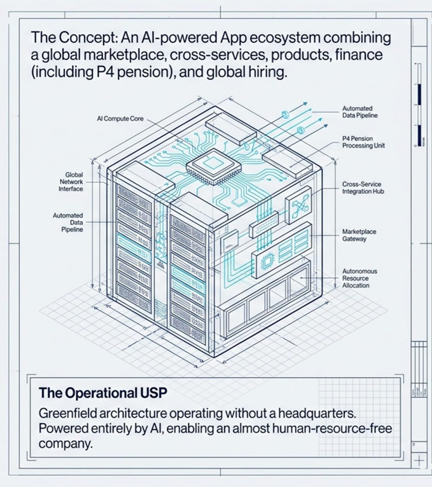
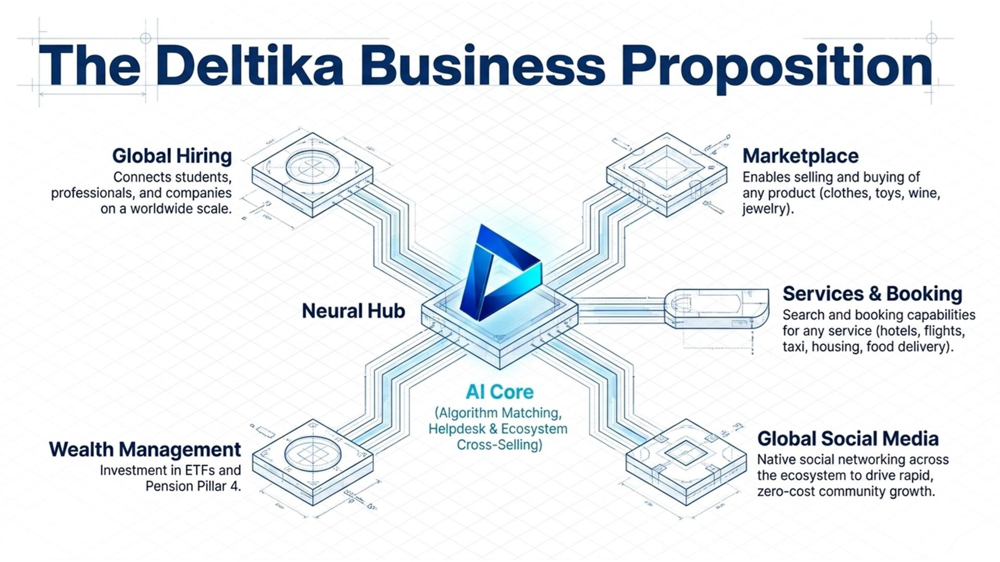

01
Recrutement
Notre première application est le recrutement. Si vous faites partie de ce réseau, voici ce qui arrive — et comment vous pourrez rejoindre.
Deltika Limited
Nous commençons par le recrutement — relier les personnes et les organisations. Ensuite nous élargissons vers un écosystème d’applications, avec d’autres arrivant vite.

Mission
Nous concevons et livrons des produits qui aident les personnes et les organisations à travailler avec plus de clarté : moins d’étapes inutiles, des informations au bon endroit, et des outils qui ne gênent pas.
L’IA fait partie de notre façon de construire, ce n’est pas un slogan. Nous l’utilisons là où elle améliore vraiment le produit — pour comprendre le contexte, relier ce qui doit l’être et réduire les frictions. Le résultat doit rester assez simple pour s’en servir sans mode d’emploi.
Nous commençons par le recrutement, puis nous en faisons un écosystème d’applications auquel les gens peuvent vraiment s’associer.
Deltika est une entreprise produit, fondée par trois associés autour de cette idée. Nous continuerons à construire.
Notre façon de faire
Le travail se complique lorsque l’information est dispersée et que les outils en demandent trop. Nous visons des produits où la prochaine étape va de soi.
Si une fonctionnalité ne brille que sur une diapositive, elle n’a pas sa place dans le produit. Nous construisons pour les heures réellement passées au travail.
Nous utilisons l’IA là où elle réduit les frictions — pas comme décor. Si elle ne rend pas le produit plus simple, nous ne l’ajoutons pas.
Objectifs
01
Notre première application est le recrutement. Si vous faites partie de ce réseau, voici ce qui arrive — et comment vous pourrez rejoindre.
02
Le recrutement n’est que le début. Vient ensuite un ensemble d’applications liées, pour que le produit ne soit pas un outil isolé mais un écosystème plus large.
03
D’autres parties de l’écosystème sont déjà en cours. Nous les ferons entrer rapidement, dès que chacune sera utilisable.
Architecture
Deux vues de la même idée : une architecture portée par l’IA, et un hub qui commence par le recrutement.


Personnes
Filip Bosschaert, Jakub Jaryczewski et Aleksandra Kaszczuk ont fondé Deltika pour livrer des logiciels utiles — pas de la complexité supplémentaire pour elle-même.
Si vous voulez en être dès qu’elle sera en ligne, contactez-nous.